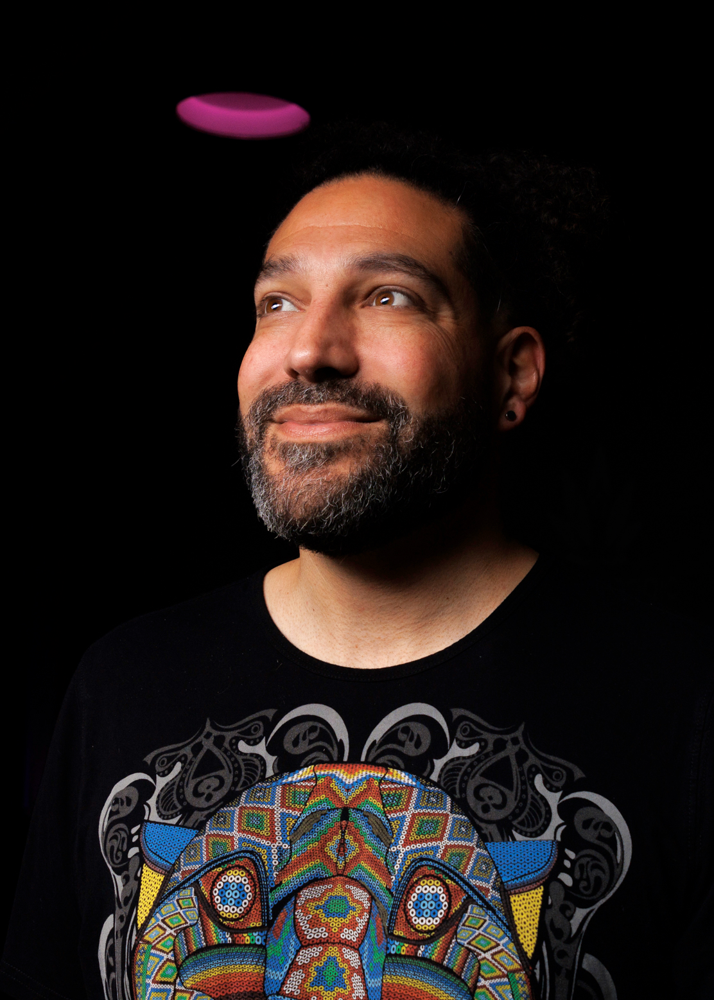

Sebastian
Beca
— Seba
Creative gestalt therapist passionate about technology, art and music.
Oakland · Santa Cruz, CA — Santiago, Chile

Therapy & Coaching
Natural Bridges
Therapy
I offer individual and couples therapy grounded in Gestalt and existential approaches — an embodied, relational practice that honours what is alive in you right now. Sessions available online and in person.
Beyond therapy, I work with individuals and teams through coaching — integrating technology, creativity, and depth psychology to support meaningful transitions and growth.
Guided Journeys
Expanded States of
Consciousness
Rooted in the lineage of Claudio Naranjo, transpersonal psychology, and Buddhist contemplative traditions, I hold ceremonial space for inner journeys — supporting individuals through non-ordinary states of consciousness with care, intention, and integration.
This work is offered carefully and always within an ongoing therapeutic or coaching relationship. Reach out to explore if this path feels right for you.
Yoga
Green Magic
Yoga
A flowing practice that integrates movement, breath, and presence. Classes online and in person, shaped by a commitment to embodiment and a deep love for the body as a site of wisdom.
Music — as Nahuel
Sets, Playlists
& Sound
Electronic music has been a thread through my life — synthesizers, curated journeys through sound, and live sets that move between the dancefloor and the ceremonial. Under the name Nahuel, I collect and create musical spaces for altered states.
Photography
Images
Likes & Links
People, Places
& Things
Natural Bridges Therapy
Gestalt therapy & coaching practice
Green Magic Yoga
Embodied yoga practice
More coming
Books, people, tools and places I love